Am 9. November lud die IKG-Jugendkommission zum diesjährigen Light of Hope ein. Im Gedenken an die Novemberpogrome von 1938 stand der Abend ganz im Zeichen der Vergangenheit, der Gegenwart und der Zukunft des jüdischen Lebens in Wien.
Gestaltet wurde das Programm von Jugendlichen aus den verschiedenen jüdischen Jugendorganisationen. Mit ihren Reden macht sie deutlich, wie wichtig es ist, sich an die Geschichte zu erinnern, aber auch darüber zu sprechen, was jüdisches Leben heute bedeutet und wie die Zukunft aussehen soll.
Das jüdische Wien vor 1938
Rafael von Hashomer Hatzair nahm das Publikum mit in der Zeit vor 1938. Damals lebten mehr als 200.000 Juden und Juden in Wien. Das jüdische Leben war vielfältig und prägte die Stadt in vielen Bereichen. Die Novemberpogrome und die Schoah zerstörten diese Gemeinschaft, rissen Familien auseinander und beendeten unzählige Lebensgeschichten.
Jüdisches Leben heute
Wie jüdisches Leben in Wien heute aussieht, war das Thema von Liel von Jad be Jad. Schulen, Synagogen, Jugendorganisationen, soziale Einrichtungen, koschere Geschäfte und Restaurants oder Sportvereine – all das gehört heute wieder zum jüdischen Wien. „Die Zerstörung war nicht das Ende unserer Geschichte“ – ein Satz, der viel von dem ausdrückt, was die heutige Generation bewegt.
Mia von BBYO beschäftigte sich mit den Zahlen hinter der Geschichte. Sie zeigen das Ausmaß der Verfolgung und Vernichtung. Gleichzeitig machte sie deutlich, dass hinter jeder Zahl ein Mensch, ein Name und eine persönliche Geschichte steht.
Wie soll die Zukunft aussehen?
Mit der jungen Generation und ihrer Zukunft beschäftigte sich Liora von Bnei Akiva. Sie sprach über jüdische Identität, darüber, das eigene Judentum selbstverständlich und sichtbar leben zu können, aber auch über die Herausforderungen und den Antisemitismus, mit denen junge Jüdinnen und Juden heute konfrontiert sind.
Ihre Botschaft brachte den Gedanken des Abends auf den Punkt: „Wir sind hier. Wir bleiben hier. Und wir werden unsere Zukunft gestalten.“
Auch IKG-Präsident Oskar Deutsch richtet eindringliche Worte an die Gäste. Oberrabbiner Jaron Niesenholz sprach das Kaddisch, Oberkantor Shmuel Barzilai rezitierte El Male Rachamim. Zum Abschluss sang Oberkantor Barzilai gemeinsam mit den Jugendlichen der jüdischen Jugendorganisationen die Hatikwa.
Light of Hope hat einmal mehr gezeigt, dass Erinnern nicht nur bedeutet, zurückzublicken. Es geht auch darum, jüdisches Leben heute sichtbar zu machen und jungen Menschen eine Stimme zu geben. Denn die Zukunft der jüdischen Gemeinschaft wird von der nächsten Generation mitgestaltet.
Fotos: IKG/SW
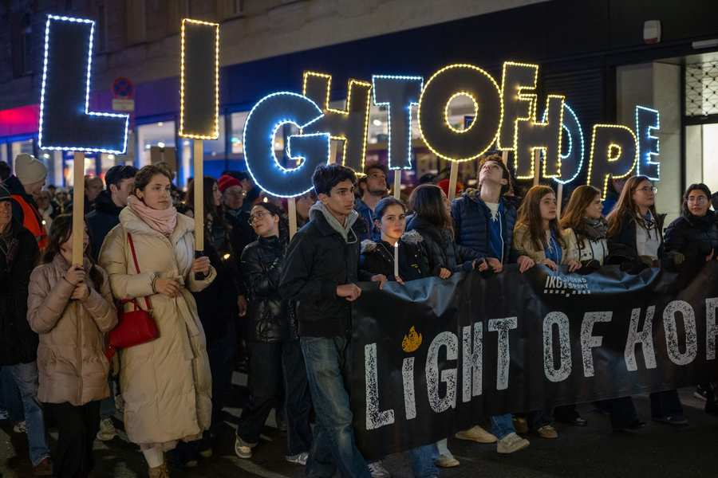
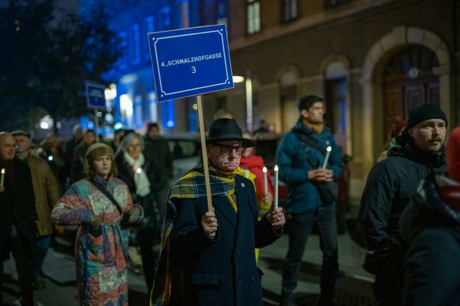
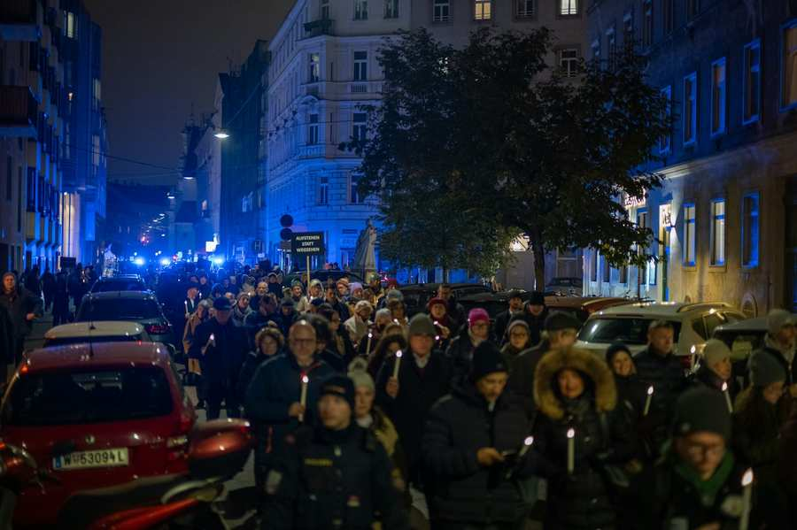
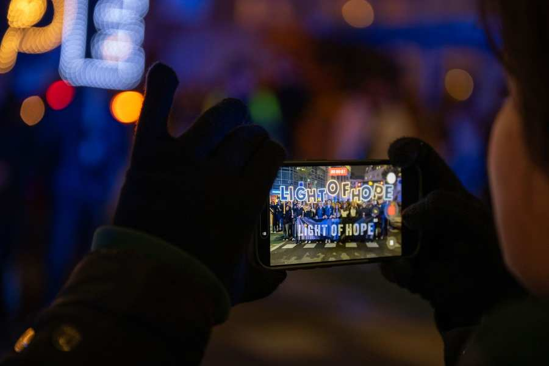
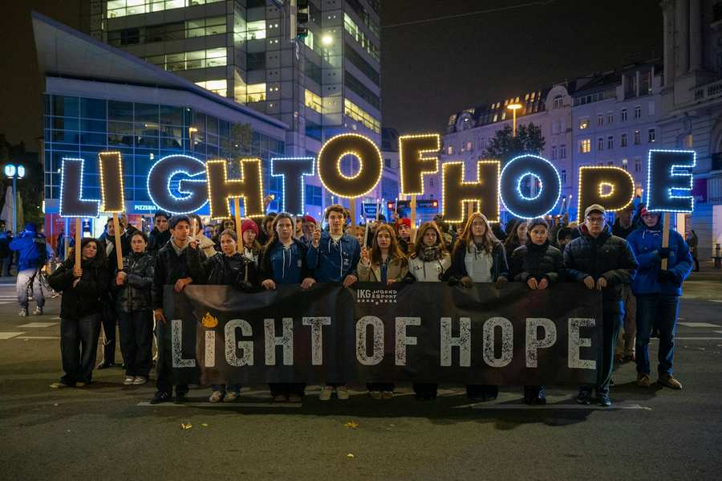
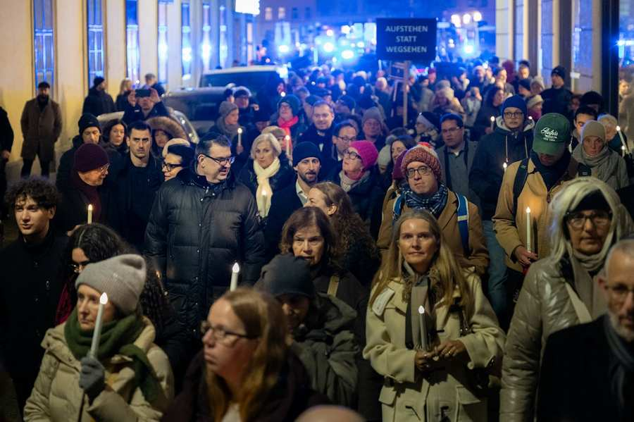
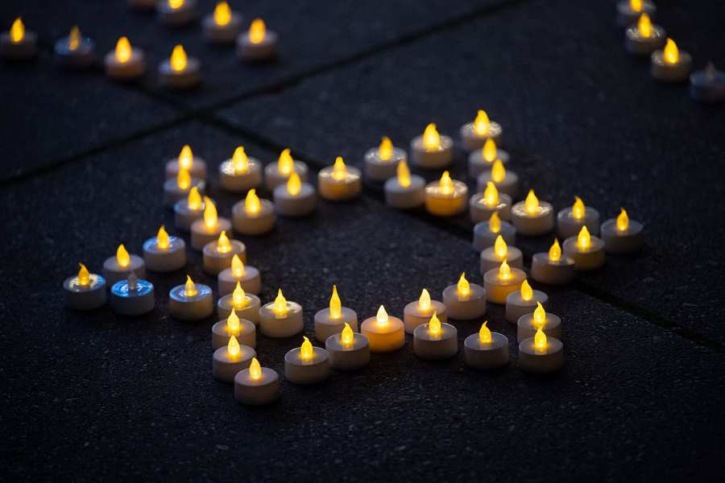
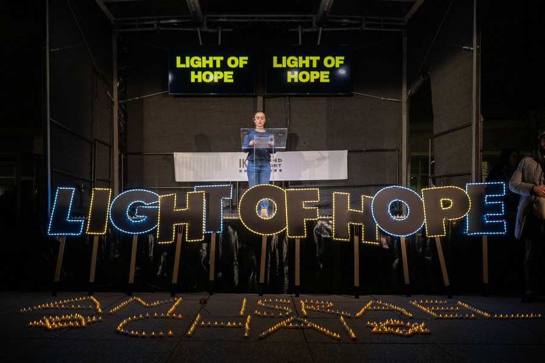
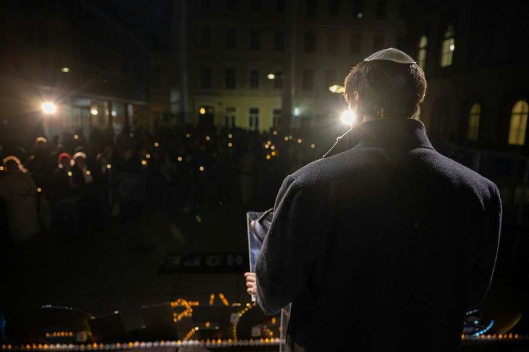
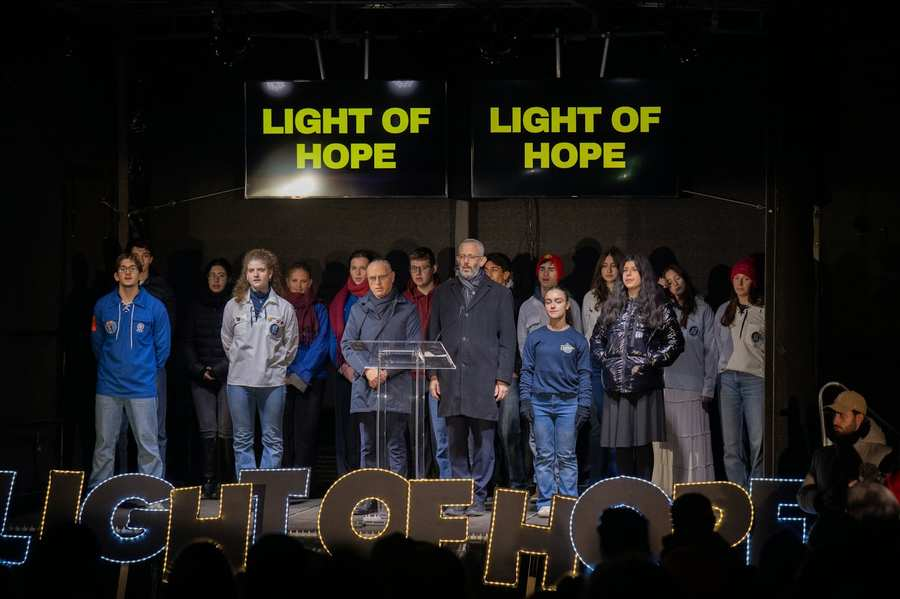
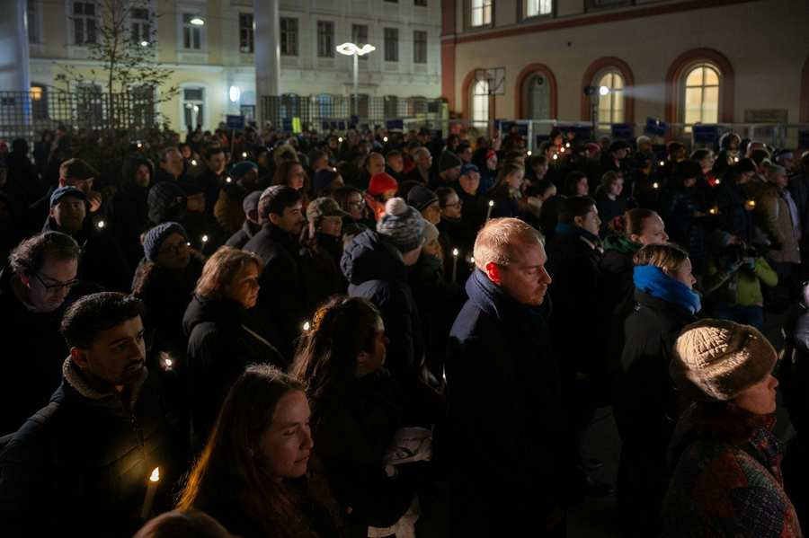
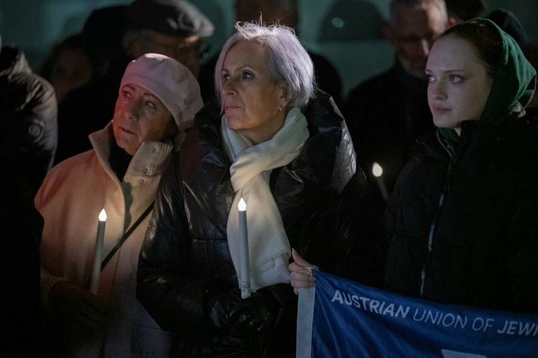
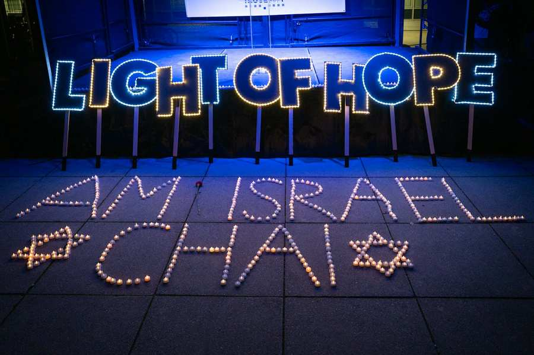
Verwandte Inhalte

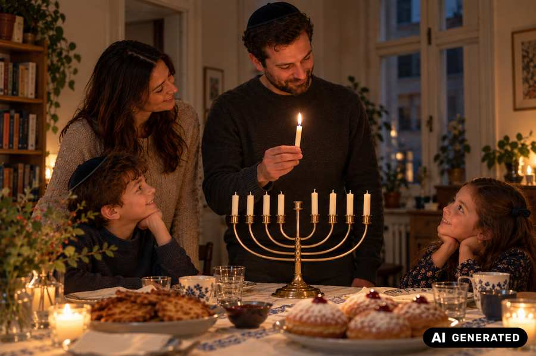